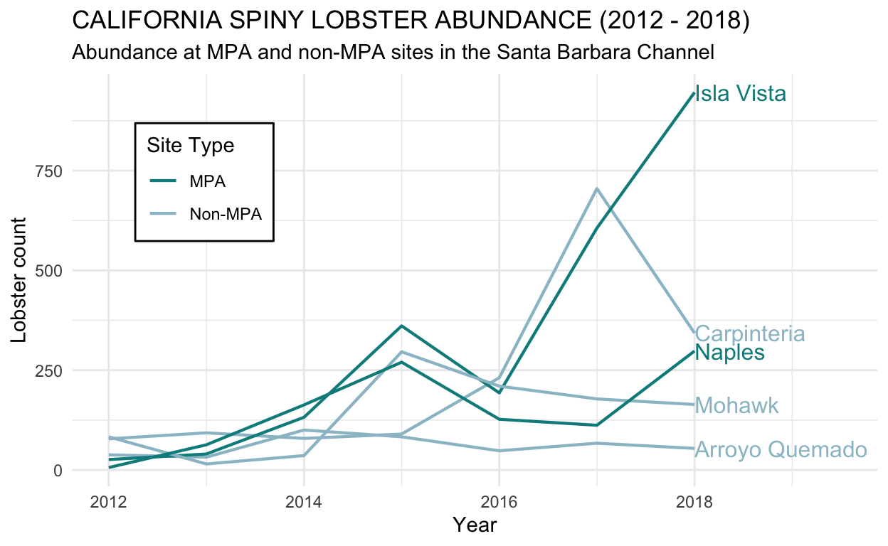
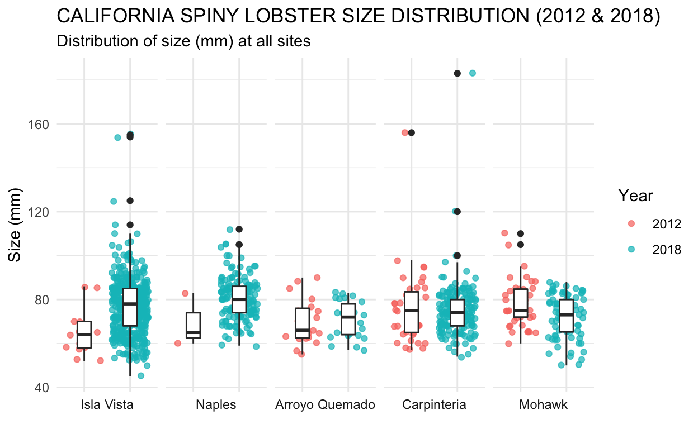

Introduction
Starting in 2012, data has been collected on the abundance, size, and location of the California spiny lobster (Panulirus interruptus) in an effort to better understand the ecology of the coastal kelp forests along the Santa Barbara coast. California spiny lobsters are an important predator species that can help maintain the health of the kelp forest ecosystem by preying on herbivorous kelp-eating species like sea urchins.

In January of 2012, two sites in the Santa Barbara Channel, Isla Vista and Naples, were designated as Marine Protected Areas (MPA). This designation regulates and limits human activity in a given area in an effort to conserve biodiversity and improve overall ecosystem health. In this report, findings on lobster size and abundance were compared between sites with MPA status and sites without MPA status. Furthermore, data was compared between 2012 and 2018 in an attempt to see if trends exist in lobster distribution over time. This data is relevant in assessing the effectiveness of MPA designation and how it impacts lobster abundance and size.
Data and Methods
Santa Barbara Coastal Long Term Ecological Research program at UC Santa Barbara collected data for the abundance, size, and location of California spiny lobsters along the coast of the Santa Barbara Channel from 2012-2018. Spiny lobster abundance and size data was collected during annual dives before the start of the fishing season in late summer at five sites. Divers recorded the number and size of spiny lobsters at four 60 x 5 m (300 m2 total) transects at each site. Two of the sites, Naples and Isla Vista, are Marine Protected Areas that were established in January 2012. Lobster abundance and size distribution for MPA sites and non-protected sites were compared using two-sided two-sample t-tests with a 95% confidence interval and Cohen’s d. All analyses and figures were prepared using R software version 3.6.1.
Code
# Attach packages
library(tidyverse)
library(here)
library(janitor)
library(tidyr)
library(ggridges)
library(directlabels)
library(effsize)
library(kableExtra)
## Read in data and make it tidy
lobster_ab <- read_csv("lobster_abundance_sbc_lter.csv", na = "-99999") %>%
clean_names()
lobster_tidy <- lobster_ab %>%
uncount(count) %>%
mutate(site = replace(site, site == "IVEE", "Isla Vista")) %>%
mutate(site = replace(site, site == "CARP", "Carpinteria")) %>%
mutate(site = replace(site, site == "AQUE", "Arroyo Quemado")) %>%
mutate(site = replace(site, site == "MOHK", "Mohawk")) %>%
mutate(site = replace(site, site == "NAPL", "Naples")) %>%
mutate(site_type = if_else(site %in% c("Isla Vista","Naples"), "MPA", "Non-MPA"))
## Make dataset for Results A to see abundance at differnent sites through the years
annual_ab_site <- lobster_tidy %>%
group_by(year) %>%
count(site) %>%
mutate(site_type = if_else(site %in% c("Isla Vista","Naples"), "MPA", "Non-MPA"))
## maybe delete this? Possibly incorrect summary table of mean sizes of MPA vs non-MPA sites in 2012 and 2018
lobster_summaries <- lobster_tidy %>%
filter(year == c(2012, 2018)) %>%
group_by(site_type, year) %>%
summarize(mean_size = mean(size_mm, na.rm = TRUE))
## Make a dataset for 2012
year_2012 <- lobster_tidy %>%
filter(year == "2012")
## Make a dataset for 2018
year_2018 <- lobster_tidy %>%
filter(year == "2018")
Results
1. Effects of Marine Protected Area designation on spiny lobster abundance
The annual abundance of California spiny lobsters was compared between 2012 and 2018 at five different sites (Figure 1). Two of the five sites were designated as Marine Protected Areas (MPA) at the beginning of 2012 and the counts were annually recorded in late summer at specific transects within these sites.
Code
## Results A - visualalization showing changes in annual lobster abundace at the five sites over time, designating MPA versus non-MPA sites.
color_group <-c("cyan4", "lightblue3")
ggplot(annual_ab_site, aes(x = year, y = n)) +
geom_line(aes(group = site,
color = site_type),
size = 0.75) +
scale_color_manual(values = color_group)+
theme_minimal()+
theme(
legend.position = c(0.25, .88),
legend.justification = c("right", "top"),
legend.box.just = "right",
legend.margin = margin(6, 6, 6, 6),
legend.background = element_rect("white"))+
xlim(2012,2019.5) +
geom_dl(aes(label=site,
color = site_type),
method = "last.points") +
ggtitle("CALIFORNIA SPINY LOBSTER ABUNDANCE (2012 - 2018)",
subtitle = "Abundance at MPA and non-MPA sites in the Santa Barbara Channel")+
labs(x = "Year",
y = "Lobster count",
color = "Site Type")

Figure 1. California spiny lobster abundance (counts) at transects within Marine Protected Areas (dark teal) and at transects not within Marine Protected Areas (light blue) between 2012 and 2018. Total lobster counts in 2012: MPA(n) = 32, non-MPA(n) = 199. Total lobster counts in 2018: MPA(n) = 1244, non-MPA(n) = 561.
Overall, the total lobster abundance in MPA sites increased more than non-MPA sites. Total lobster counts within MPA sites increased dramatically from 32 to 1244 between the years 2012 and 2018.Total lobster counts in non-MPA sites also increased from 199 to 561 in that same time period. Of all five sites, abundance of lobsters at Isla Vista (an MPA site) increased the most by 2018.
2. Lobster size distribution shifts between 2012 and 2018
In addition to exploring lobster abundance at different sites over time, size differences in lobsters were observed across different sites and years. Figure 2 explores size distribution shifts from 2012 to 2018 across the five sites.
Code
## Data frame for exploring lobster size distribution shifts in 2012 and 2018
lobster_size <- lobster_tidy %>%
filter(year == c(2012, 2018)) %>%
mutate(site = fct_relevel(site, c("Isla Vista", "Naples", "Arroyo Quemado", "Carpinteria", "Mohak")))
## Visualize size distribution
ggplot(lobster_size, aes(x = factor(year), y = size_mm)) +
geom_jitter(aes(color = factor(year)),
alpha = 0.7)+
geom_boxplot(width = 0.3)+
theme_minimal()+
theme(axis.title.x=element_blank(),
axis.text.x=element_blank(),
axis.ticks.x=element_blank())+
facet_grid(~site, switch = "x") +
labs(title = 'siwtch = "x"',
x = "Site",
y = "Size (mm)",
color = "Year")+
ggtitle(label = "CALIFORNIA SPINY LOBSTER SIZE DISTRIBUTION (2012 & 2018)",
subtitle = "Distribution of size (mm) at all sites")

Figure 2. Size distribution of California spiny lobsters at each site in 2012 compared to 2018. In the box plots, the solid line in the middle represents the median of that sample, while the box itself includes the middle 50% of the data. The whiskers extend to include the remaining 25% of observations on either side of the box, and the solid points indicate outliers. The jitter points behind the boxes are included to show the actual distribution of observed data points. The MPA sites are the first two sites on the graph (Isla Vista and Naples).
Medians in size between 2012 and 2018 differed more in MPA sites than in non-MPA sites. The median size in MPA sites in 2012 was 64.5 mm, while the median in 2018 was 78 mm. In non-MPA sites, the difference was smaller; the median went from 75 mm in 2012 to 73 mm in 2018. Figure 2 reinforces the findings of Figure 1 by showing the increase in lobster abundance at all sites, most notably in Isla Vista. A small number of outliers in size were observed at all sites except Arroyo Quemado.
3. Mean lobster sizes between site types (MPA and non-MPA) and years (2012 and 2018)
Code
## Starting t tests, create 4 vectors with lists of sizes
MPA_2012 <- year_2012 %>%
filter(site_type == "MPA") %>%
pull(size_mm)
non_MPA_2012 <- year_2012 %>%
filter(site_type == "Non-MPA") %>%
pull(size_mm)
MPA_2018 <- year_2018 %>%
filter(site_type == "MPA") %>%
pull(size_mm)
non_MPA_2018 <- year_2018 %>%
filter(site_type == "Non-MPA") %>%
pull(size_mm)
## #1 size differences in 2012 between MPA and non-MPA
size_2012_ttest <- t.test(MPA_2012, non_MPA_2012)
# size_2012_ttest
#Cohen's d
size_2012_d <- effsize::cohen.d(MPA_2012, non_MPA_2012)
# size_2012_d
## Summary statistics
n_mpa_2012 <- as.numeric(length(MPA_2012))
n_nonMPA_2012 <- as.numeric(length(non_MPA_2012))
mean_MPA_2012 <- mean(MPA_2012, na.rm = TRUE)
sd_MPA_2012 <- sd(MPA_2012, na.rm = TRUE)
mean_nonMPA_2012 <- mean(non_MPA_2012, na.rm = TRUE)
sd_nonMPA_2012 <- sd(non_MPA_2012, na.rm = TRUE)
median_mpa_2012 <- median(MPA_2012, na.rm = TRUE)
median_mpa_2018 <- median(MPA_2018, na.rm = TRUE)
median_nonmpa_2012 <- median(non_MPA_2012, na.rm = TRUE)
median_nonmpa_2018 <- median(non_MPA_2018, na.rm = TRUE)
## #2 size differences in 2018 between MPA and non-MPA
size_2018_ttest <- t.test(MPA_2018, non_MPA_2018)
# size_2018_ttest
#Cohen's d
size_2018_d <- effsize::cohen.d(MPA_2018, non_MPA_2018)
# size_2018_d
n_mpa_2018 <- as.numeric(length(MPA_2018))
n_nonMPA_2018 <- as.numeric(length(non_MPA_2018))
mean_MPA_2018 <- mean(MPA_2018, na.rm = TRUE)
sd_MPA_2018 <- sd(MPA_2018, na.rm = TRUE)
mean_nonMPA_2018 <- mean(non_MPA_2018, na.rm = TRUE)
sd_nonMPA_2018 <- sd(non_MPA_2018, na.rm = TRUE)
## #3 size differences in MPA between 2012 and 2018
MPA_diff_ttest <- t.test(MPA_2012, MPA_2018)
# MPA_diff_ttest
#Cohen's d
MPA_diff_d <- effsize::cohen.d(MPA_2012, MPA_2018)
# MPA_diff_d
## #4 size differences in non-MPA sites between 2012 and 2018
non_MPA_diff_ttest <- t.test(non_MPA_2012, non_MPA_2018)
# non_MPA_diff_ttest
#Cohen's d
non_MPA_diff_d <- effsize::cohen.d(non_MPA_2012, non_MPA_2018)
# non_MPA_diff_d
Summary statistics were calculated for lobster size in sites with different protection status in 2012 and 2018. Mean lobster size (mm) was compared and analyzed using two-sided two-sample t-tests for four groupings: MPA and non-MPA sites in 2012, MPA and non-MPA sites in 2018, MPA sites in 2012 and 2018, and non-MPA sites in 2012 and 2018.
Table 1. Lobster size distribution in 2012 and 2018 in MPA and non-MPA sites. Mean size, standard deviation, and sample size are compared between years and protection status (site type).
Code
### table
# Make table subset
table_data <- lobster_tidy %>%
select(year, site, size_mm, site_type) %>%
group_by(site_type, year) %>%
summarize(mean_size = mean(size_mm), sd = sd(size_mm), n = length(size_mm)) %>%
filter(year %in% c(2012, 2018))
round_table <- table_data %>%
mutate_at(vars(-n, -site_type, -year), funs(round(., 2)))
lobs_table <- round_table %>%
kable(col.names = c("Site Type",
"Year",
"Mean Size (mm)",
"Standard Deviation",
"Sample Size (n)")) %>%
kable_styling(bootstrap_options = "striped",
full_width = F,
position = "left") %>%
add_header_above(c("Summary of Lobster Size Distribution" = 5))
lobs_table
| Site Type | Year | Mean Size (mm) | Standard Deviation | Sample Size (n) |
|---|---|---|---|---|
| MPA | 2012 | 67.38 | 12.15 | 32 |
| MPA | 2018 | 77.57 | 11.70 | 1244 |
| Non-MPA | 2012 | 74.92 | 12.41 | 199 |
| Non-MPA | 2018 | 73.62 | 10.09 | 561 |
In both 2012 and 2018, the mean lobster size differed depending on protection status of sites. In 2012, the mean lobster size (mm) in MPA sites (67.38 \(\pm\) 12.15, n = 32) was smaller than the mean size in non-MPA sites (74.92 \(\pm\) 12.41, n = 199). This difference in means of 7.54 mm was determined to be significant using a two-sample t-test (t(42.09) = -3.25, p = 0.002) and determining that effect size was medium (Cohen’s d = -0.61).
In 2018, mean lobster size again differed based on MPA status. This year, mean lobster size in MPA sites (77.57 \(\pm\) 11.7, n = 1244) was greater than the mean lobster size in non-MPA sites (73.62 \(\pm\) 10.09, n = 561). This difference (3.95 mm) was again statistically significant based on a two-sample t-test (t(1239.51) = 7.31, p < .001) with a medium-small effect size (Cohen’s d = 0.35).
In regards to lobster sizes between years, there was a dramatic shift in mean lobster size (mm) at MPA sites (67.38 and 77.57) when compared between 2012 and 2018. This increase in mean size by 10.19 mm was significantly different (t(32.5) = -4.69, p < .001) and effect size was large (Cohen’s d = -0.87).
In contrast, mean lobster size (mm) in non-MPA sites remained relatively constant between 2012 and 2018. The difference in mean lobster size was only 1.3 with a small effect size (Cohen’s d = 0.12). The slight decrease (74.92 to 73.62) was not significantly different using a two-sample t-test (t(296.01) = 1.33, p = 0.183).
Summary
Abundance of lobsters in both MPA and non-MPA sites increased between 2012 and 2018, with the most dramatic increase observed in Isla Vista. Lobster abundance at MPA sites increased by 3,787.5% between 2012 and 2018, compared to an increase of only 181.9% in non-MPA sites (Figure 1).
Mean lobster size in MPA sites differed significantly between 2012 and 2018. The increase in mean lobster size was 10.19 mm (15.12%) (Table 1).
Between 2012 and 2018, mean lobster size in non-MPA sites did not differ significantly. The mean size decreased by 1.3 mm (Table 1).
Based on these findings, it is possible that Marine Protected Area status has an effect on lobster size and abundance. From 2012 to 2018, lobster size and abundance increased more in Marine Protected Areas than in sites without this designation (Figure 1, Figure 2, Table 1).
References
Reed D. 2019. SBC LTER: Reef: Abundance, size and fishing effort for California Spiny Lobster (Panulirus interruptus), ongoing since 2012. Environmental Data Initiative. https://doi.org/10.6073/pasta/a593a675d644fdefb736750b291579a0. Dataset accessed 11/15/2019.